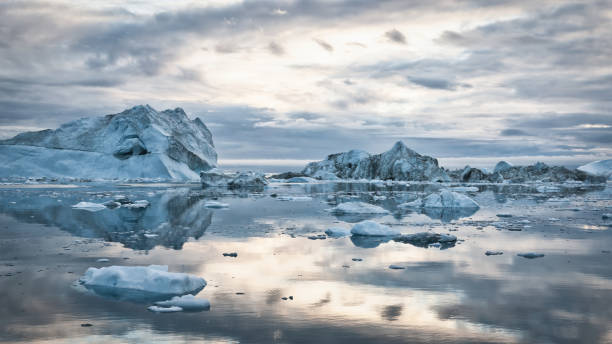

This page will talk about the poles and their main issue!
The poles are the last bit of land we humans have yet to fully explore, meaning that there possible might be whole new spieces we have yet to find out about underneath the giant ice sheets of the poles!
This means with the world getting ever more increasing hotter each year, it steadily to melt away at the poles causing these unknown creatures alongside already existing ones we know of such as polar bears to lose more area for them to live on.
Alongside the loss of land for the creatures living in the poles, the ice melting also results in sea levels rising all across the world which while only slightly, it'll eventually drown out other ecosystems while the Poles and their ecosystems also get effected by their ice being melted away.
One solution to this problem is reducing the amount of C02 we process into our plant. There's a whole range of possibles we can do to reduce C02 such as turning to more green energy like wind turbins, dams and so on that don't let out C02 after being used.
GAIA has been promoting more green sources that will help reduce C02 from being released into our planet, seeing it as something that not only helps prevents the poles from melting but it also is a better long-term use of energy rather than fossil fuels which are only one-usage.